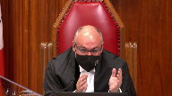

Her Majesty The Queen v. J.J.; A.S. v. Her Majesty The Queen, et al.
This transcript was made with automated artificial intelligence models and its accuracy has not been verified. Review the original webcast here.
Speaker 1 (00:00:02): La Cour, the court!
Justice Wagner (00:00:26): Good morning, be seated.
In the case of Her Majesty the Queen against J.J. and A.S. against Her Majesty the Queen et al.
For the intervener, Attorney General of Canada, Mark Ribeiro, and Lauren White.
For the intervener, Attorney General of Ontario, in the case of 39133, Jennifer Trehearne and Jill Whitkin.
Pour l’intervenant, Procureur Général du Québec, Abdou Tihar.
For the intervener, Attorney General of Nova Scotia, Erika Karisawa.
For the intervener, Attorney General of Manitoba, Jennifer Mann, and Charles Murray.
For the intervener, Attorney General of British Columbia, in the case 39516, Lara Visoli.
For the intervener, Attorney General of Saskatchewan, Sharon H. Pratchler, QC.
For the intervener, Attorney General of Alberta, Deborah J. Alford.
For the intervener, Women’s Legal Education and Action Fund, Inc., in the case 39516, Kelly Bryan, Karen A. Stewart.
For the intervener, West Coast Legal Education and Action Fund Association, and Women Against Violence Against Women Rape Crisis Center, Gloria Ng and Kate Finney.
For the intervener, Barbara Schlieffer Commemorative Clinic, Joanna Berenbaum.
For the intervener, Criminal Trial Lawyers Association, in the case 39133, Peter Sankoff and William Van Engen.
For the intervener, Criminal Lawyers Association Ontario, Gerald Chan, Daniel Brown, Lindsay Board.
For the intervener, Canadian Council of Criminal Defense Lawyers, in the case 39133, Mr. John M. Williams and Thomas Einz.
For the intervener, Criminal Defense Lawyers Association of Manitoba, in the case 39516, Saul B. Simmons, QC, Jessie S. Brar.
For the intervener, Independent Criminal Defense Advocacy Society, in the case 39133, Mr. Greg Dalbiggio.
Please note that in the file 39133, there’s a sealing order from the lower courts, and there is a publication ban in this file pursuant to section 486.4648278.951 of the Criminal Code.
And in the file 39516, there is a publication ban in this file pursuant to section 486.41 of the Criminal Code.
Speaker 2 (00:03:45): Thank you, Mr. Chief Justice.

I want to address two points that were raised yesterday.
First, the fact that the definition of record in Section 278.1 may cover information about the subject matter of the charge.
And second, the concern about the effectiveness of cross-examination being potentially compromised by the legislation.
So, what do we make of the fact that the definition of record may be capable of covering evidence on the subject matter of the charge and which would have obvious probative value?
Well, the thing is, since we’re talking about a record, there may be sensitive information in there that is intertwined with the relevant information.
In other words, there’s a risk of spillover.
For example, imagine a conversation by Zoom between the accused and the complainant.
It is a conversation that took place after the alleged assault, in which she talks about the subject matter of the charge, and the accused recorded the video.
Now, during the Zoom call, the complainant, we see her half-naked, and she has elements in her surroundings that are very private in nature.
In that case, even though the record relates to the subject matter of the charge, because this is what she’s talking about, we can see how it may be problematic if the accused were able to file it unilaterally without pre-screening.
This is just one example, but there may be many sensitive things that can be intertwined with the relevant material in various kinds of records.
Some might even appear mundane to defense counsel, but be very sensitive to the complainant.
Something, for example, that within her culture is sensitive, or something that a teenager doesn’t want her family to know, for example.
We submit that we cannot just rely on the unilateral decision of the accused counsel to file the evidence.
We need the filtering procedure to separate the probative from the prejudicial.
Now, it doesn’t mean that the evidence is not there.
It doesn’t mean that the evidence is not there.
It doesn’t mean that the evidence is not
Justice Rowe (00:06:35): does this not mean as a practical matter that any document which the accused has which they might want to use in cross-examination has to be disclosed and the subject to this procedure isn’t isn’t the net cast essentially comprehensively isn’t that what you’re saying
Speaker 2 (00:07:03): It is fairly broad in as much as the record addresses things that are of a private nature coming from the complainant.

But keep in mind, it doesn’t mean that the accused will be deprived of the use of that probative evidence.
And it doesn’t mean that it’s going to bog down the system either.
First, if the defense sends it to the Crown and say, do you resist the admissibility of this?
And then the Crown shares it with the complainant, and the complainant doesn’t have any reason to resist admissibility.
She can always waive the operation of the section, and there will be no need for a debate.
And if there is a debate, then the judge will likely declare admissible the evidence that warrants it at the end of the law.
Justice Brown (00:08:03): Are you saying that the constitutionality of this scheme hangs in part on the complainant’s ability to waive it?
Speaker 2 (00:08:12): No, I was just mentioning that in passing to highlight that it won’t mean that the court will necessarily be overburdened by many applications because the, but whether the court is overburdened or not is no bearing on the constitutionality in any event.
What’s mostly significant is that if there is resistance, if there is no waiver, then there’s going to be that process and the court will separate the probative from the prejudicial.
And now, I understand the downside to the accused in that, and that brings me to my second point.
By the way, it’s not by the way, it’s not just probative, it’s not.
Overlapping speakers (00:09:00): Thank you.
Justice Brown (00:09:01): It’s not just probative value.
It has to have significant probative value.
Does that level have any particular, well, let’s call it significance here.
Speaker 2 (00:09:16): Yeah, no, it does not.
Actually, the French version doesn’t have an equivalent.
So we can ignore the English version.
Justice Brown (00:09:25): then.
I’m sorry?
So we can ignore the English version then.
Speaker 2 (00:09:31): Well, that’s, I believe in Derek, this court looked at this very wording and concluded that significant only means in the end that it’s not purely trivial and that’s consistent with the French version.
So yes, it may be considered superfluous, that word in the section.
Now, I understand that the main concern on the accused side is that he won’t be able to take the complainant by surprise, but this court has already weighed in on this and we brushed on it quickly yesterday, but I would like to come back to it.
Well, just before you get into that, Derek.
Justice Moldaver (00:10:22): But just before you get into that, I want to ask you a question about your example.
If you’re talking about some Zoom shots or something that have been recorded where the complainant on the day after the event, albeit they’re talking about the event in question, is semi-naked and there’s other stuff around that would be, you know, very private and so on, of a sexual nature.
I’m just not at all sure that we’re not into 276 in that example, because as you know very well, 276 was amended at the same time as we brought in, as the legislation in question was brought in.
So it’s true that the sexual activity in question may be the subject matter of the conversation, but you also have a communication, it seems to me, whose content is of a sexual nature.
So let’s leave that until we have to deal with it, but it seems to me that you’re taking an approach that is not perhaps as troublesome as you seem to think it is.
Speaker 2 (00:11:34): In the example I was using, she’s not half-naked because she’s engaged in seduction or it’s not for a sexual purpose.

She just happens to be in her pajamas and the, you know, the blues is open and she’s just loosely having a serious conversation with the accused.
So, it wouldn’t be that what a community…
Justice Moldaver (00:11:58): communication means and so on but
Speaker 2 (00:12:04): I’m sorry, I didn’t get that.
Justice Moldaver (00:12:06): We can debate what a communication includes or doesn’t include in the proper case.
Speaker 2 (00:12:13): Yes, but it has to be pursuant to when we’re talking about 276, paragraph four, communication made for a sexual purpose, whose content is sexual in nature.
So I’m mentioning that she is half naked, not for the purpose of it being in a sexual context, but just because it exposes her privacy.
She’s having a serious conversation with him and there are elements around her that are private.
That’s where I’m trying to get at.
So it wouldn’t be caught by 276 because it deals with the subject matter of the charge and 276 specifically exclude that factual situation.
But since it’s a record and the parliament has foreseen that records can have a spillover effect contrary to testimony.
Testimony is lean because the person who answers the complainant can filter out any irrelevant information and just answer what is relevant.
Whereas a record, you’re stuck with filing the whole thing or you’re stuck on the unilateral decision of the defense counsel if he wants to redact something in advance, but we cannot rely on him for doing that completely.
Now, I was about to address the concern that the defense unfortunately, I’m sorry.
Justice Wagner (00:14:08): I’m sorry, your time is up, but I will give you one more minute if you can.
Speaker 2 (00:14:14): Sure.

Thank you, Mr. Chief Justice.
Well, I mean, just highlighting clearly that this court acknowledged with respect to sexual history evidence that the complainant would be consulted in the process before the voir dire by the Crown, and that was a reason for the seven-day lead time to the application.
And now the court in Derek at paragraph 55, it’s worth reading verbatim.
If the defense is going to raise the complainant’s prior sexual history, it cannot be done in such a way as to surprise the complainant.
Justice Brown (00:14:55): And that’s because it’s presumptively irrelevant.
Speaker 2 (00:15:01): Well, I mean, this court, we’re talking about evidence that is potentially relevant to the defense as this court had ruled in Siboye.
And the complainant was being informed of it prior to the admissibility debate and prior to her eventual cross-examination on it because her interests were involved, like in the case of the regime that we have here.
And in Mills, we have the same situation.
We have third-party regime, and you cannot argue that it’s presumptively relevant in Mills, but the same situation.
We have application that must be served on the complainant pursuant to the Mills regime.
And again, that is because her interests are at stake with these records, and the court nevertheless upheld the regime despite the fact that the defense would arguably, again, lose the element of surprise in cross-examination.
Thank you.
Justice Wagner (00:15:59): Thank you, sir.
Ms. Jennifer Trehearne.
Overlapping speakers (00:16:06): Yes, good morning Chief Justice.
Justice Wagner (00:16:08): Before you start, I would remind you to maybe if you want to address the motion filed by your colleague about the motion for to appoint council.
Speaker 3 (00:16:18): Yes, thank you Chief Justice.

What I can indicate on that point is that yesterday evening Ms. Whitkin, my colleague, filed a written response to that motion.
I’m content to rely on our written submissions in that regard
but I’m certainly happy to address the motion if it would be of assistance to the court.
What I would like to do then in my time today is to address two interrelated points and the first is why in my submission the seven-day notice period does not cause unfairness to the accused and there was some discussion with Mr. Ribera about that just a few minutes ago.
There are a number of points I want to make in that regard.
First of all, I want to emphasize that the legislation does not require service of the record on the complainant.
It also does not require service of the record on the complainant seven days in advance of trial.
While we submit that in most cases she should receive a copy of the record and that the application should be brought pre-trial to facilitate her meaningful participation, nonetheless the legislation does not require either of those things.
In addition, there are cases in which the presiding judge has decided that the record, the application record, if given to the complainant would risk unfairness in the form filed by the defense at the first stage and so has permitted the defense to amend the record before giving it to the complainant to ensure, for example, that her evidence is not tainted by reading other witness statements that have been included in the record.
I would also reiterate the point that Justice Jamal raised yesterday that this is much like the Mills situation in which the complainant receives notice not only of the record but the likely relevance of it.
The reason that the accused is seeking that record is often so that he can ultimately put it to the complainant at trial and yet there’s no suggestion that trial judges have been unable to discern fact from fiction in relation to the testimony of a complainant who’s had access to the third party records application.
I would also note in my submission that in many cases the contradiction between the record will and some other statement, either the police statement or preliminary inquiry evidence, will have crystallized prior to trial.
That contradiction exists irrespective of any explanation the complainant might give for it at trial but if for some reason the contradiction has not crystallized, for example, if the complainant says something unexpected on the witness stand or if there was something ambiguous in her police statement which the accused did not understand necessarily to contradict a record in his possession, then the trial judge has the discretion to abridge the notice period and allow a mid-trial application.
An accused can cross-examine the complainant on her access to the record in assessing, in encouraging the judge to assess her credibility on the basis that she knew the purpose for which the accused sought to use it before she gave her evidence.
And finally, in my submission, while there is some value to surprise in some situations, in my submission, in my submission, this court has been clear that the accused does not have the right to distort the trial process and what this legislation recognizes is that this is a particular situation in which the harm of being presented with a private record in a public open forum can result in situations in which complainants either cannot answer the question because they’re so discombobulated, are unwilling to continue with the prosecution because they’re so harmed by the airing of their private information.
Justice Brown (00:20:02): Where are you getting this from?
I mean, I know in your factum you cite scientific journal articles and legal articles.
Was any of this on the record below?
Speaker 3 (00:20:18): None of the social science evidence that we filed.
Overlapping speakers (00:20:21): So what are you giving expert evidence right now?
Speaker 3 (00:20:24): No, respectfully, first of all, I would ask this court to note that these, that much of what I’m saying is drawn from the work of Professor Elaine Craig, who has been relied on by this court on numerous occasions, but also in my submission, it just stands to reason and is part of the experience of the criminal trial process that being presented with a private record when, when the allegation is sexual assault, which is by itself an invasion, a significant invasion of privacy.
And then the complainant is asked to describe in granular detail the incident, and then a record, which again is not just any record, but a private record, and is also, and it’s important to note this in my submission, is a record that is in the possession of the accused, often because of a trust-like relationship between the complainant and the accused, so, and that’s a trust-like relationship, which she says he has violated in the most egregious of ways, that one can imagine that being presented with a private record in that circumstance would feel like a further intrusion on the complainant’s privacy to a significant extent.
And indeed, one of the purposes of the legislation that the Parliamentary Secretary to the Minister of Justice noted in the House of Commons was to encourage reporting of sexual offences.
He noted how low the reporting statistics are, and he indicated that that was one of the purposes of this legislation, and indeed that’s found in the factors a judge has to consider in determining the admissibility of a record.
So in my submission, that all supports the, the goals of the legislation and how they’re tied to the harm reduction that the legislation can accomplish.
Justice Brown (00:22:18): I’m sure it would if it was properly before us.
Justice Moldaver (00:22:20): Well, if it’s properly before us, it probably is, because Tom Lee from this court said so, effectively.
Yes, thank you.
Good for the goose is good for the gander.
Speaker 3 (00:22:34): Thank you, Justice Moldova.

The other thing I would note is that although of course there are times when the accused wishes to use one of these records for an entirely proper purpose and the legislation allows that, that’s why this legislation is a filter not a bar, this court in Goldfinch recognized that historically these issues, private issues, have been used to whack the complainant, to humiliate her, in order to harm her with the deliberate effect of harming her so that she’s unwilling to continue with the prosecution.
So in my submission that is something else that must inform the purpose of the legislation when this court is interpreting it.
I would ask this court to consider that in the normal course the application should be brought pre-trial for the reasons that I’ve outlined but in my submission a mid-trial application reduces the likelihood of the benefit of the legislation being given to the complainant and I say that because if an application is not brought until the middle of the complainant’s cross-examination or even at the end of the examination in chief of the complainant, at that point the complainant is forced to choose between two harms, the harm of being confronted with a private record in a public forum or asserting her privacy interest in the record and seeking an adjournment and facing the ongoing stress of the criminal trial.
So in my submission in those circumstances she may well elect to get the whole process over with, forego the protection of the legislation and in my submission mid-trial applications therefore often undermine the benefit of the legislation.
I would also note on the topic of why these applications should be brought pre-trial as Ms. Wittgen outlined yesterday but I want to emphasize identifying when a myth or stereotype is afoot can be very difficult as this court recognized in FIND.
Myths and stereotypes often masquerade as common sense.
There are cases in which trial judges have correctly instructed themselves not to rely on myths and stereotypes but have then gone on to do exactly that according to appellate courts who have reviewed their decisions.
These are tricky issues in my submission and mid-trial applications put the trial judge in the position of having to make a quick decision about whether a record invokes a myth or stereotype which is particularly problematic in the context of a jury trial where there’s a jury waiting in the wings.
The last benefit of pre-trial applications that I would raise for the court is that in my submission it reduces mid-trial delays.
All the parties can plan for the application, time can be set aside in advance.
Mid-trial delays as I indicated are difficult in the context of jury trials but they can also make it difficult in trials by judge alone for the trial judge to make credibility findings when the continuation dates are far in advance.
Trial delay also means that trials that are waiting in the wings can be delayed and that can result in a proliferation of 11b applications.
In my submission pre-trial applications in the normal course are consistent with this court’s dicta in Jordan that all justice system participants should be rowing in the same direction towards efficient trial management and again if there’s some unfairness by a pre-trial application the trial judge has the discretion to abridge the notice period.
I see I’m almost out of time and subject to any questions those are my submissions.
Justice Wagner (00:26:18): Thank you very much, Mr. Abdu Tio.
Speaker 4 (00:26:24): oui bonjour oui

monsieur le juge en chef bonjour mesdames et messieurs les juges bonjour le procureur général
du québec souhaiterait aborder les deux points suivants le premier point concerne le fait que les articles 278 points et 92 à 278 points 94 ne prévoit pas le moment le moment où la demande d’admissibilité devrait être entendue par le tribunal ces dispositions sont tout simplement silencieuses là dessus elles ne disent rien par rapport à cela on ne devrait pas donc contrairement à ce qui a été fait en première instance on ne devrait pas leur imputer n’importe quel nom pas en réalité la question de savoir à quel moment la demande devrait être entendue doit être réglée par le juge d’instance dans l’utilisation de son pouvoir discrétionnaire de gestion d’instance en supposant les divers intérêts en jeu en supposant nécessairement les droits constitutionnels de la défense mais aussi les autres les autres intérêts de la justice
Justice Côté (00:27:41): de vous interrompre.

Selon vous, le mot auparavant, quand on retrouve sous paragraphe 4, on doit l’ignorer?
Quand on parle de sept jours auparavant, je comprends que ça ne précise pas est-ce que c’est sept jours avant le procès ou sept jours avant l’audition de la demande d’admissibilité.
Mais est-ce qu’on doit complètement ignorer ce terme?
Speaker 4 (00:28:11): Yes, thank you, Madam Judge Côté.

In fact, the reading we do of the French version is that, before, it meant like seven days before the hearing of the request.
That’s how it was understood in Quebec.
But as for the moment when the request must be heard, as for the moment of the hearing, we don’t see anything like in Article 278.93.4, which says it.
Once again, that the request should be sent seven days before, seven days before, it’s seven days before the hearing of the request by the judge.
And by the way, I noticed that in the arrest of Osolin, as well as in Schering, which concerned people with private cases, in these two cases, it was in the middle of an interrogation that admissibility had been requested.
That’s the understanding we have in Quebec.
So I continue by saying that if, for example, we had to determine that this request should be heard before the beginning of the trial or before the main testimony of the plaintiff, it should be on the basis of other foundations, but absolutely not on the basis of Article 278.93.4, as the judgment in the Pelletier case of Quebec foresees.
The second point that the Attorney General of Quebec would like to address is the fact that Articles 278.92 to 278.94 are only the conforming reflection of the internal jurisprudence of the Supreme Court.
A jurisprudence started in 1991 with the Boyer case and ended in 2002 with the Schering case.
I will give three or five examples to demonstrate this.
This means that if these dispositions are only the conforming reflection of the internal jurisprudence of the Court, the jurisprudence of the Court should not be removed here, the Court should not be removed either.
It should not be removed from the application of these dispositions.
On the first point, with the question of the judge-court, we see that the two judgments of the first instance are based on a single premise, on the premise that when we read Article 278.93.4, this disposition forces the accused to submit his request before the trial.
However, in the Pelletier judgment that I submitted to you from the Quebec Court, this is absolutely not what has been retained.
The Quebec Attorney General believes that the moment when this request must be heard, this moment must be determined as it is regularly done in front of our courts of justice by the judge of instance who will support the various interests at stake.
The second point that I will present earlier is the fact that Article 278.92.94 is only a reflection of the internal jurisprudence of the Court.
I will take five examples.
Article 278.92.2 concerns and speaks of the admissibility trial.
It is exactly in the French version the words that the Supreme Court used in the last year, and it is also the same admissibility trial that the Supreme Court had retained in the Tonge-Lamorin case, saying that it is this admissibility trial that allows to discard any pertinent evidence of the difference.
The second example is Article 278.92.3, where we speak of various factors that must be taken into consideration.
This provision takes up an old provision that has already been validated by the Court in the Darak case.
And the third example is Article 278.93.2, which speaks of useful precisions.
This provision also takes up an old provision that has already been validated by the Court in Darak.
The fourth example concerns Article 278.94.2, which speaks of the pleading comparison.
Well, this provision is obviously inspired by Article 278.4 in terms of evidence communication.
This provision, 278.4, which it is inspired by, has already been validated by the Supreme Court in the Mills case.
And also in the ALL case, the Supreme Court had recognized that the plaintiff, in the same context, should have the right to present himself, to make his observations valuable.
The fifth example is the right to the lawyer.
In Article 278.94.3, what we see is that in the case, in fact, the facts of the resharing are not incompatible with this provision, because in this case, the Supreme Court had not questioned the fact that the plaintiff had benefited from a resharing, had taken the services of a lawyer who defended her case to the level of the Court.
In reality, the main elements of this regime are only the reflection of the Court’s internal jurisprudence.
And the two files that are in front of the Court do not present any specificities or particularities that should make sure that the Court moves away from its internal jurisprudence.
So if the Court should not move away from its internal jurisprudence, it should not rule out the application of legislative provisions that are only the reflection of conformity.
And I thank you.
Justice Wagner (00:35:04): Merci beaucoup, maître.
Messe Erika Karisawa.
Speaker 5 (00:35:12): Chief Justice and Justices, my submissions are going to focus on one point, and that is the impact that this screening regime has on vulnerable or marginalized populations and the records that tend to attend those populations.

I know that there has been much discussion about communications between the complainant and the accused about the events, but I say that it is important to also focus or not lose sight of these records and these vulnerable populations because of the equality and attending fair trial implications.
Others have discussed whether victims have rights or interests or values, but I remind this court of Justice Moldaver’s words in Barton in which, and I borrow these words, I paraphrase, that our criminal justice system holds out a promise to all Canadians that we are all entitled to equal protection and benefit of the law, and that equality right is enshrined in sections 15 and 28 of our charter, and they do belong to a complainant along with all of us.
And the second reason I say that this discussion is important is because those here who say that the scheme is unconstitutional urge this court to find that the entire scheme is unconstitutional because of its effect on the accused’s rights.
But I urge this court not to lose sight of the practical effect that this scheme will have and does have on the equality of those who are marginalized and to keep that consideration in mind when we’re looking at whether the constitutionality of this regime does strike a fair and proportionate balance between the rights of all those who have rights at stake.
The Attorney General of Nova Scotia’s position is that this screening regime enhances trial fairness because it closes a legislative gap that would otherwise have a disproportionate effect, negative effect, on complainants from vulnerable populations.
And that is because of the interplay of three factors particular to vulnerable populations.
The first being that they are at increased risk of being complainants of sexual violence.
These complainants who are experiencing homelessness, have addictions, are on welfare or involved in social services, they are at increased risk of themselves being complainants of sexual violence and therefore they may be subject to multiple inequalities.
Second, these complainants are at risk of being subject to myth-based arguments because of their vulnerability, that is people who are on welfare, experiencing homelessness, who have addictions issues, very well have been the subject of myths or stereotypes that they are more likely to have consented or are incredible because of those vulnerabilities.
And therefore there is a risk that this vulnerability will be used to anchor myth-based arguments under the guise of relevance of these records.
And I pause here to note that there was some discussion yesterday about the concerns that DARA really isn’t an apt analogy for transposing the reasoning there for 276 materials to records because of this inherently prejudicial nature of 276 material.
But I say that records can also carry that prejudice or may also be adduced for improper purposes.
For example, when we look at Auslan, where Defence had sought to introduce medical records to show quote what kind of person the complainant was or the facts in Shearing where Defence sought to introduce this diary of the complainants to argue without a foundation that the complaints, if they had happened, would have been recorded.
These myth-based or prejudicial arguments should be subject to scrutiny.
I wonder if we can be a little more precise with our language.
Justice Brown (00:39:44): Yes.

You’ve referred sort of generically to myths and kind of equated it with prejudice.
I mean, obviously, there’s the myths that we address under 276, that because somebody consented to prior sexual activity, they consented on the ex-occasion, or they are exactly the type of person who would.
But you’ve identified another myth that because someone’s marginalized, they’re inherently not credible.
And then now you’re just referring generically to myths.
And I’m wondering if we could be a little more precise about what it is we’re talking about, then.
Speaker 5 (00:40:23): Certainly.

So I draw that, for example, from Justice Leroux-Dubay’s comments in Seaboyer, pages 651 to 653, she identifies a number of myths associated with the chaste or the good complainant, and that real complainants of sexual violence have a chaste character, or do not have these vulnerabilities, such as running away from home, experiencing homelessness, being subject to addictions, and therefore the myth that someone who has records that reflect those vulnerabilities would be incredible, or would be more likely to have consented.
So those were the myths that I was referencing when I was speaking about that point, Justice Brown.
And I also want to highlight that, as I think has become clear in my submissions, that it is because of this vulnerability that many of these complainants are likely to have more records.
That is, someone who’s involved with addiction services is going to have records generated as a result of their engagement with that agency, same with welfare or social services, and therefore their lives are more likely to be heavily documented.
And that means that they are at risk of an, an increased risk of inappropriate scrutiny at a criminal trial, at cross-examination about their records, because they happen to have more records that simply exist.
And that scrutiny then has an implication on their substantive equality that these complainants should enjoy, and therefore their privacy interest in their records, as well as the specific use that is going to be made of their records, should be screened.
And that is what this regime does as a whole.
It ensures that that screening actually takes place in a timely fashion, without surprise to any of the parties.
As Mr. Hearn mentioned, these myths and stereotypes can be very difficult to root out and assess and see whether they, the reason that’s being purported for introducing the record is actually relevant to an issue, or whether it truly does go to a myth or a stereotype.
I’m just, I’m just…
Justice Rowe (00:42:54): So I just refer you to the definition of record very briefly.

Any form of record that contains personal information for which there is reasonable expectation of privacy and includes medical, psychiatric, therapeutic, counseling, education, employment, child welfare, adoption, and social service records.
It seems to me that this is plain as day that the kind of things that you’re talking about are really specified in the definition of records and that the difficulty isn’t what’s enumerated, it’s records of a different kind.
So I’m not disagreeing with you, I’m just saying that I think that it’s not really controversial in a way.
Speaker 5 (00:43:43): Certainly, I take your point, Justice Roe, and what I would say is that because those who say that the scheme is unconstitutional are looking at having this Court strike down the entire scheme of legislation and having us return to the common law, having us return to sharing, I want to ensure that this Court doesn’t lose sight of all of the types of records that are going to be without a screening regime, should that be the remedy that this Court seeks to impose.
And that is why I say that it is important to consider the equality the equality implications for these particular vulnerable types of complainants when we’re looking at the scheme as a whole.
I appreciate there is much discussion and concern about communications or those records that are not enumerated.
But I would urge this Court in my last 30 seconds to not lose sight of those records that are in fact enumerated and how they will have an impact on persons from vulnerable or marginalized populations.
I think, given the time remaining, I’ll leave my submissions at that subject to any further questions.
Justice Wagner (00:45:00): All right.
Thank you very much.
Jennifer Mann.
Speaker 6 (00:45:15): Thank you Chief Justice and Justices.

Imagine you are a teenage complainant in a sexual assault case.
The accused is your stepfather.
You get to the trial and unbeknownst to you, defence has your diary or your psychiatric records.
You don’t find out that they have these very personal records until you are on the witness stand being cross-examined.
This scenario is exactly what the new Section 278.92 regime was designed to avoid.
It is clear that the harm from this situation is not just that these records may be used in a way that engages myth and stereotypes, although that is a very real concern.
But there is additional harm that flows.
The complainant already facing the difficult task of talking about a traumatic and personal event is faced with her deeply personal and private records unexpectedly being made public.
Her deeply held secrets contained in her diary or medical records, for example, are now in a public forum without any advance notice to her.
Justice Brown (00:46:31): So can I ask you the same question that Justice Roe asked of your colleague from Nova Scotia?

What you’ve described are records that are specifically enumerated within the definition of records in 278.1, medical records, personal journals, and I’m actually interested in hearing about the things that aren’t enumerated in there, the things that do not attract such a high privacy interest.
Why should we not be concerned that this definition captures records that do not fall within those enumerated lists but then in fact may be quite probative in a way that is not offset by significant prejudice?
Speaker 6 (00:47:31): And so, Justice Brown, what I would say to that, and I actually was planning to address that, is this.

The scope of the definition of record is an interpretation issue, and it’s a significant one that clearly this court will need to consider.
And to that end, at paragraph 24 of our factum, our main factum, we’ve actually provided a list of many of the factors that have been identified by trial courts as helpful in this determination.
Our position in our factum and today is that an interpretation of record that is consistent with the purpose of this section is one that is actually limited to those records that are either one, specifically enumerated in the section, two, are similar in nature to those specifically identified in the section, or three, records for which there would clearly be an objectively reasonable expectation of privacy.
And to be clear, an objectively reasonable expectation of privacy can and should be considered in the context of a criminal trial where someone’s liberty is at stake and who has the right to full answer in defence.
And I would say this position is consistent with Mills, both at paragraphs 21 and at paragraph 99, where this court actually responded to claims that the definition of record was too broad by stating that the response to these claims is to remember that the legislation applies only to a record for which there is a reasonable expectation of privacy.
Justice Kasirer (00:49:24): Just on building on what you’ve been saying, I’m wondering if you may be neglecting some words of Parliament that would help us in this interpretive exercise that you point out, and I’m specifically thinking of personal information for which there is a reasonable expectation of privacy.

Why did Parliament specify personal information?
Is it possible that these words highlight a dimension of privacy that means that the privacy interest of the complainant rises to an important public interest, where it might not otherwise, but it’s because it strikes, the record strikes at the biographical core of the complainant, and her ability to control that information in the public square, that her dignity is at stake by reason of the record and its personal character, that it’s
Overlapping speakers (00:50:34): It’s deserving.
Justice Kasirer (00:50:34): of public.

So in a sense, if we’re to give direction to trial judges, we should be emphasizing personal information and its relationship to dignity, equality, and the biographical core and not just the reasonable expectation of privacy.
What are your thoughts on that?
Speaker 6 (00:50:56): I absolutely agree and
and I would suggest that that actually is quite consistent with the approach taken in Mills and and Quesnel.
This court spoke about the deeply personal types of information in Mills it related to other complaints to police other that would be held by uh by the police uh sorry in Quesnel but the bottom line is that interpretation is exactly what this section is about and has been about and when this court is considered um the uh the definition has really expanded on that
uh so and I as I was going to say in terms of Mills uh uh at paragraph 99 uh the court actually said
that only documents that truly raise a legally recognized privacy interest so that would include um uh information about the complainant that not just any communications but where there’s real core biographical information about the complainant so with that with that
Justice Brown (00:52:10): Would that extend hypothetically to text messages or emails or other electronic communications between the complainant and the accused about the subject matter of the charge?
Speaker 6 (00:52:23): Well, and so I don’t think that it necessarily does and and I’ll say that and when we’re looking at the definition we need to consider it in the context of a criminal trial and and I would pose this question does a complainant retain a reasonable ex retain a reasonable expectation of privacy to information so communications with an accused about the subject matter of a trial given that she’s made a complaint and we’re going to be having a trial does she still retain that expectation that he is going to keep that information that she provided about the subject matter of the case private and so I understand where you’re wrestling with this

but I will say this certainly some electronic communications will fall within this definition if the complainant is you know texting with her mother for example about personal events including the allegations and expects that that information that she provides her mother is going to be kept private that’s a reasonable expectation I think objectively we would see that the bottom line is in that context those electronic communications would certainly fall within the definition so there is so so
Justice Brown (00:53:54): So she loses her expectation of privacy by virtue of her making a complaint.
Doesn’t that rather undermine the purpose of encouraging reporting?
Speaker 6 (00:54:04): Well I suppose that I definitely see what you’re wrestling with this
but I mean at the end of the day we do need to consider uh whether uh they she uh retains one what is it an objectively reasonable expectation that when you communicate with uh the actual person you’re alleging to have assaulted you about the actual offense itself uh in the context of the fact that we are going into a criminal trial do you retain that expectation of pride?
Overlapping speakers (00:54:36): privacy.
Thank you very much.
Speaker 6 (00:54:37): I’m not sure that the answer is clear on that.
But certainly I think that the argument is there that that wouldn’t be an objectively reasonable expectation of privacy.
Justice Karakatsanis (00:54:49): Can I just bring you back to that and the question you just built on the question that Justice Kasir asked you and and also refer back to a question that Justice Jamal asked yesterday when you’re looking at the interpretation of those words personal information in which there’s a reasonable expectation of privacy in light of the statutory scheme and objectives Is it helpful to look at the factors enumerated in sub 3?
Including the complainants personal dignity and right to privacy Personal security whether it’s the kind of information that engages That even engages the factors set out in sub 3. Is that helpful to the interpretation?
Speaker 6 (00:55:40): Yes it absolutely is and and if you look at some of the factors that we’ve identified in our our factum some of that is is dealt with in the case law already.

So there are fact those facts you need to look at what is the information about what is the communication about does it deal with core biographical information or reveal core biographical information about the complainant and so all of those need to be put into the mix it’s not easy and I do think I would say
and I’m already out of time I do think it’s important to remember though ultimately that any the definite that this section was put in place for a really valid and legitimate purpose and the interpretation of reasonable expectation of privacy and what a definition what the definition of record needs to be consistent with the the competing interests in this case which include the complainant’s right to privacy and security of the person and dignity and equality.
So those are my I had a lot more to say
but I recognize that I’m now out of time
and so I will keep the floor thank you thank you.
Justice Wagner (00:57:06): Laura Vissoli
Speaker 7 (00:57:12): Please Justice, Justices, I think I’d like to start by following up on the last couple of questions posed by Justice Kassir and Justice Kara Kastanis.
Justice Kassir, in Sherman Estate, you wrote that personal information disseminated in open court can be more than a source of discomfort and may result in an affront to a person’s dignity and that that is a public interest.
And I say that that public interest is even more heightened in the context of a sexual assault prosecution, where already a complainant is suffering in reliving the offense and in relating the most private aspects of what happened to her, an affront to her dignity.
She doesn’t need additional ones.
And with respect to Justice Kara Kastanis’ question, I agree that the factors enumerated in Sub 3 are critical to understanding how a reasonable expectation of privacy applies and how the balancing of factors occurs.
So my intention today was to address two areas.
The first is to explain why a bright line or categorical approach, particularly in respect of electronic communications between the complainant and the accused, or even a subset of those electronic communications between the complainant and accused about the subject matter of the offense simply isn’t workable and highlight some of the criteria that trial judges have been applying to make the necessary determination about REP.
So what appears to have emerged from the submissions yesterday and today, and the questions are, you know, there are some electronic communications which we can say are utterly mundane.
There’s no reasonable expectation of privacy.
There’s no personal information.
The scheme doesn’t apply to those.
And so we can lock those off.
There are communications which clearly contain personal information in which there’s a reasonable expectation of privacy, even where the communications are between the complainant and the accused.
So some of the examples cited yesterday, and I appreciate that Justices Brown and Roe that these fall under the enumerated categories.
But what I say to that is that without the enumerated categories, the only bar to their admissibility is a shearing-type voir dire.
There is no statutory scheme.
There is no threshold screening.
At the time they’re produced, it’s up to the court or the Crown or even the complainant to object to them.
And by the time they’re produced, the harm may already have been done.
So some of those would be disclosure in a text of a mental health diagnosis to an accused.
Records which the accused possesses as a result of a therapeutic relationship or one of confidentiality.
Records which the accused possesses as a result of their relationship with the complainant.
So it could be a position of trust, like a parent or a teacher.
But it could also be a domestic relationship or possibly an employment relationship.
Records which the accused possesses that relate to sensitive information that were not given to the accused by the complainant, but which he had access to by virtue of, for example, cohabiting with the complainant.
Communications with others that are in the possession of the accused by either legitimate or illicit means.
So either they were given to the accused by the other party, or, for example, they were acquired by access to the complainant’s electronic devices or accounts.
The statutory scheme sets up a screening.
Process, a filtering process, as my colleague from Nova Scotia said.
Or sorry, from Ontario said it’s a filtering process.
It’s not a bar.
Another relatively easy type of communication is those which are sexual in nature or were made for a sexual purpose.
But which don’t form the subject matter of the offense.
And those are governed by Section 276.
So there, there’s a statutory scheme in place to deal with those.
But we have this other category of communications that are sexual in nature or made for a sexual purpose.
But they do fall within the subject matter of the offense.
And the example of that, the easiest example of that is the photo in JJ itself.
And the fact that it forms the subject matter of the offense doesn’t necessarily extinguish the complainant’s expectation of privacy in it.
Moreover, the danger of prejudice or impermissible reasoning or myth-based reasoning is perhaps at its highest with respect to that type of evidence.
But the greatest area of concern expressed yesterday related to communications between the complainant and the accused that fall somewhere in the middle of the spectrum.
Particularly where they relate to the details of the offense.
And AGBC says that the impugned provisions are a screening mechanism only.
The enumerated factors assure that all relevant considerations are weighed.
The evidence’s probative value outweighs the prejudice of the complainant’s privacy, dignity, and equality.
And if it is not being led for an improper purpose, it will be admissible.
While the provisions make the communications presumptively admissible, it’s not a blanket exclusion.
Rather, the presumptive inadmissibility only ensures that they will be screened.
There is no indication in any of the materials before this Court that relevant information is not being admitted.
AGBC submits that while the jurisprudence necessarily had to develop and evolve, there are now some key criteria that trial judges have become well adept at applying to determine whether there’s a reasonable expectation of privacy.
So there’s sort of a broad set of criteria and then there’s some more specific ones.
The broad criteria are the nature and the quality of the information which is contained in the communications is highly relevant.
In other words, electronic communications are not a category of records in relation to which a reasonable expectation of privacy invariably arises or never arises.
And so it’s important to note that these are not a category of records.
In relation to which a reasonable expectation of privacy invariably arises or never arises.
And that’s consistent with this Court’s jurisprudence, whether it’s in the Section 8 context or not.
A complainant’s privacy concerns will be at their strongest where the communications disclose intimate details about the complainant’s lifestyle and personal choices, including personal characteristics and private interactions.
The question to be addressed is whether the information contained in the records is of a type that the complainant would subjectively have reasonably expected would remain private and then is that objectively reasonable.
Specific considerations, and these are adapted largely from Regina versus MS, a 2019 decision of the Ontario Court of Justice cited in the Appellant’s Factum in JJ.
The nature of the relationship between the complainant and the recipient, domestic, friendship, trust or authority, is the complainant a child or an adult?
The circumstances in which the messages were created.
The medium through which they were sent, for example, is it a private text message or is it the posting of a communication on a publicly accessible platform?
How was the information access?
Was it sent or was it otherwise obtained?
If it’s on a forum like, for example, Facebook, what are the privacy settings?
How many other people were privy to the communication?
For example, was it a group chat or was it a private conversation?
Is the information in the record akin to that which one might reasonably expect to find in the records that are enumerated in the section?
For what purpose was the information provided to the accused?
Is there any express indication that the communication was intended to remain private?
Is it implied in the communication?
If it’s not strictly other sexual activity offence, is it akin to that type of evidence?
If not, is it nonetheless the kind of information that has historically and improperly been used to discredit sexual assault complainants?
The type of evidence the Attorney General has used to discredit sexual assault complainants.
Overlapping speakers (01:06:04): Thank you.
Speaker 7 (01:06:04): of Nova Scotia referenced.
Is it information that might be considered biographical core information as that concept is defined by the jurisprudence?
Justice Moldaver (01:06:13): Give us an example, please, of that, because that is such an amorphous term, speaking for myself.
I don’t know where it begins and ends.
So, can you relate that specifically to the context that we’re talking about, or are we to say that if there’s information about how you like to do your banking, that will be, uh, that will be covered?
It doesn’t, it’s not helpful, by the way, speaking for myself, to set out a shopping list like you are doing, because that is just going to continue the problems that we’ve been having, which is, there’s no sort of core definition of record that people can look at and say it is or it’s not, because you’re just continuing a regime where it’s all grey, it seems to me.
Speaker 7 (01:07:06): Well, if I might, Justice Moldaver, I think the gray emerges from our current, the evolution of privacy in our society, which becomes more and more digital every day.
This court wasn’t having Zoom hearings two years ago.
The last year and a half have forced people who refuse to communicate digitally to do so.
And so I think there can’t be a categorical approach.
There can’t be a simple yes or no.
It would be easy if there was, but you can’t hive off a specific type of communication and say it’s a record or isn’t a record by the type of communication it is or with whom it was exchanged.
And I see I’m out of time.
Justice Wagner (01:07:57): Thank you very much.
The court will take its morning break.
Fifteen minutes.
The court will take its morning break.
Please be seated.
Sharon Pratschler.
Speaker 8 (01:09:12): Thank you Chief Justice.
Saskatchewan wished to start our submissions this morning with the question that Justice Casirer asked yesterday which was whether the reference to personal information and the definition of records does any work.
The court has got to the point that we hoped it would in terms of that issue in the summary that Justice Casirer outlined this morning.
Saskatchewan relies on the reference to personal information as a significant component of the definition.
To be personal information in our submission, the information would have to disclose something that is personal or private to the individual, their views, their thoughts, their opinions, their mental health.
We can also rely on the use of that term personal information to quite easily screen out records that contain mundane information.
An example of what might be considered mundane is an exchange of texts arranging to meet for dinner.
However, it is not possible in advance without a contextual analysis to determine whether all of the communications in relation to the night of an offence or the day of an offence would be something that needs to be assessed through the screening or not.
It simply has to go through the screening if it meets the two tests of reasonable expectation of privacy and personal information.
And there is a significant value in going through that winnowing process.
It may be that a significant amount of documents are eliminated or records are eliminated at step one and we’re distilled down and we’re more focused as we get to step two.
But that is the benefit of a screening mechanism.
It helps to deal with difficult questions that require a contextual analysis and an assessment of the nature of the privacy interest at play and the impact on the accused ability to make full answer in defence.
But that can only take place within a contextual analysis in Saskatchewan submission.
The second question that we wanted to come back to from yesterday was the considerable discussion about the question of whether texts were included in the definition under Section 278.1.
278.1 on its face expressly refers to any form of record.
So in Saskatchewan submission, when Parliament uses general language like any form of record, it need not enumerate all the possible forms, such as paper, digital, emails or texts.
In Saskatchewan submission, it is the content of the information that matters, not the medium through which it is conveyed.
In our submission, people convey highly intimate and personal details about their life through texting.
One need look no further than the creation of the term sexting to demonstrate this point.
In assessing whether it is personal information, it is the content of the message that matters, not the medium through which it is conveyed.
Similarly, Saskatchewan submits that the number of text messages should not affect the analysis.
It is the content of those text messages that matter.
Justice Rowe (01:12:50): But I’m wondering whether there’s a sort of almost a tautology or an automaticity to how this is being approached.

If one is focusing on, and some of the questions have focused on, communication from the complainant to the accused relating to the events in question, and the charge is sexual assault, clearly we’re talking about something relating to sexual activity, which is personal.
And all of a sudden, we now have a reasonable expectation of privacy because it’s personal and because it relates to sexual activity.
And so it’s almost like the whole definition just collapses in on itself into a certainty, the way that it’s being explained here.
Maybe I’m missing it, or perhaps the light has gone on over my head.
Speaker 8 (01:13:53): No, I don’t think it’s it’s doing quite that justice role with respect, it is providing a process that provides certainty to everyone in terms of how the information will be analyzed in court.

So there’s a value to that.
And so, when I think of this process I think of rural Saskatchewan, and being in one of those small town halls, and a complainant asking a very fair question, which is how will my information be protected in this hearing.
And as a former crown prosecutor, and having been in those small towns, you want to be able to provide a concrete answer.
And this regime allows a concrete answer.
It allows us to say, there is a process.
And we could go so far as to say that the closer this gets to the accused’s ability to make full answer and defense, the balance, you know, is going to become very important in their favor, but there will be a process, and there will be an assessment of the nature of the interest and and the nature of the accused interest.
There will be a clear review of factors.
There will be involvement by you if you choose to have it, and even through independent representation.
And there will be a requirement of reasons.
And what we haven’t talked about yet is there will be an in camera process, which is what this regime provides for.
So, I’m not sure that I can explain it any better than my friends that have preceded me, but I would say it is it is different in kind because it covers a range of information and expressly tells the complainant, this is what you can expect from the process rights.
It doesn’t guarantee the complainant a particular outcome, but it does say, when your personal information is involved.
This is not carte blanche, there will be a process that will be followed.
Justice Rowe (01:15:58): But I guess what I’m saying is that the manner in which this has been presented to us, the threshold for reasonable expectation of privacy, personal information, has been cast so broadly that other than pick up milk on the way home, there’s nothing, I mean it’s all in.

And really the question isn’t whether it’s reasonable expectation of privacy.
That’s automatic.
The question becomes relevance.
And then the champ de masse, the battlefield, becomes whether it feeds a myth.
This is what the process, it seems to me, is set up to do.
Everything the accused wishes to use gets swept in, at least in the submissions that I’ve heard.
And then the battlefield, as I said, becomes relevance, and relevance is tested against this wide-ranging view of myths.
And that’s really the upshot of this process, unless I’m misunderstanding it.
Speaker 8 (01:17:08): With respect, Justice Roe, our submission would be that it’s actually a bit in reverse of what you have articulated, that it starts with an understanding that there are considerable myths, at least 10 that were articulated in Seaboyer.
And so the focus is on what is the use of this information and that screening process helps sift it.
And I am sorry that there hasn’t been a greater focus on the limits within this provision, because in Saskatchewan submission, the personal information and the reasonable expectation of privacy do create significant tasks that have to be met through which the information is screened.
You’ve been presented with this hyperbolic notion of thousands or hundreds of text messages, which hasn’t been our experience in Saskatchewan.
In fact, the Anderson case that was the first Superior Court decision at the end of the day, there were no records used in cross-examination that came from the possession of the accused.
So I do want to put it in that context.
The particular emphasis that Saskatchewan has placed in our factum is really on the issue of what is the principal basis for establishing participatory rights for the complainant.
And so we’ve gone back and looked at concepts like audio alterum and gone back even to the civil context and thought about the issue of standing.
So it’s sort of an unusual situation where we say to a complainant who we have recognized has rights that you don’t get to have any say really in terms of how submissions are made about your rights.
That’s an extraordinary concept to say that a complainant cannot contribute to a determination of the scope and applicability of their rights in this context.
Seeing that the clock has ended, those are Saskatchewan’s submissions.
Justice Wagner (01:19:18): Thank you.
Thank you very much.
Ms. Debra Alford.
Speaker 9 (01:19:25): Yes, good morning Mr. Chief Justice and Justices.
It is Alberta’s position and we wish to make two points that this legislation is indeed constitutional.
If I may take the court back to the history and the context in which this legislation was developed that will be my first point and will hopefully lead me into two particular examples of myths and stereotypes in response to Mr. Justice Brown’s earlier question.
Alberta’s second point will be that this legislation provides limited participatory rights to the sexual assault complainant and that that does not make the sexual assault complainant a party to the litigation or as some have described it as a second prosecutor.
If I may take you to paragraph 58 of Mills where then Justice McLaughlin eloquently said and much more eloquently than I could ever say, she says the following, the history of the treatment of sexual assault complainants by our society and our legal system is an unfortunate one.
Important change has occurred through legislation aimed at both recognizing the rights and the interests of complainants in criminal proceedings and debunking the stereotypes that have been so damaging to women and to children.
But the treatment of sexual assault complainants remains an ongoing problem.
If constitutional democracy is meant to ensure that due regard is given to the voices of those vulnerable to being overlooked by the majority, then this court has an obligation to consider respectfully Parliament’s attempt to respond to such voices.
So there we have an early indication and recognition of course of the problems of these myths and stereotypes that creep their way into the litigation in this area.
And of course two particular examples come to mind that dealing with the avoidant behavior of an adolescent that was recognized in this court’s decision in Regina and ARJD, which came from Alberta, and of course the older case of Ewen Chuck back in 1999 dealing with the manner of dress.
There are also such ideas as why did the complainant not let out a hue and cry?
Why did the complainant not tell anybody?
And with respect as this area develops and as legislation we submit, such as the impugned legislation before you, contributes to the evolution of the law, we suggest that there will be perhaps more myths, more stereotypes identified so that trial courts that run every day can have a mind to that and be careful about that.
Moving to our second point, it must be remembered, we respectfully submit, that this legislation is limited in what it does provide to the complainant in a sexual violence case.
This is all conducted in a voir dire, an in-camera one, indeed, under these provisions.
The distinction between the voir dire and the trial proper, we suggest, is very important because that is what provides the complainant with a right to participate as opposed to a right to a party right.
And if I might give some examples as to what the sexual violence complainant is not able to do, certainly they are not able to present submissions or examine any witnesses in the trial proper.
The complainant cannot dictate how the prosecution will run, how the evidence will be presented and the order of witnesses.
The complainant cannot dictate if the prosecution will end, either by way of a stay of proceedings or by a withdrawal of the charge.
The complainant cannot become involved in the strategic decisions made by the prosecutor.
The prosecutor retains the independence of the Crown and has imbued in it the rationale behind the Crown, the focus of the Crown that must be on providing the accused with a fair trial and that must be in presenting evidence to see if there is a crime committed beyond a reasonable doubt.
And finally, the complainant cannot make any submissions on that ultimate question of guilt or innocence.
That, again, is in the sole purview of the Crown prosecutor.
So, with respect, we suggest that the Crown, the prosecutor, and the plaintiff be brought to the court.
Thank you.
Justice Rowe (01:25:45): I take it though you concede that the complainant would have a full opportunity to address the admissibility of the evidence.
Speaker 9 (01:25:59): at the voir dire justice role.
Yes, yes, I don’t.
Justice Rowe (01:26:05): I mean, in the context of the voir dire, I didn’t mean at the trial, the voir dire, because if it doesn’t get to the voir dire, it doesn’t get to the trial.
So, I mean, in a sense, what does it matter?
I mean, the admissibility of the evidence will be decided in the voir dire, and therefore, the complainant will have a direct role in participation in the question of admissibility.
Is that not the case?
Speaker 9 (01:26:37): Well the complainant will have a role of course but the ultimate question as to admissibility of that evidence will of course be in the hands of the of the judge of the gatekeeper of that function and at times as some of the others have have indicated the prosecutor may in fact be at odds with the complainant on this point and it will come down to the gatekeeping function of the trial judge sitting as the voir dire judge to determine what is in and what is out of that trial proper.
It may in fact be that all of the evidence is so collateral to the to the issues at trial that that none of it goes in but it is only we would submit by the context being appreciated in the voir dire that truly the admissibility of that whatever piece of evidence it is can be can be can be can be considered.
Justice Rowe (01:27:39): And can the complainant lead evidence as to the existence of myths and stereotypes, such as studies, and build a record there to contest admissibility?
One would think so.
That would be contemplated, would it not?
Speaker 9 (01:28:04): Well, I would tend to agree with you on that, Justice Roe, because it makes sense that if the evidence does identify or articulate perhaps a myth that we have not even thought about, something that is subconscious, that that is very important to be dealt with at the voir dire level and not be presented by asking the question in the trial proper, perhaps before the jury, because once the question is asked, sometimes the damage is already done without the answer being provided.
And finally, by having this screening mechanism, by dealing with it carefully and methodically in the voir dire process, I respectfully submit on behalf of Alberta that this will provide a more orderly procedure ultimately for judge alone and for jury trials.
You know, it will avoid such things as the shuffling in and out of the courtroom for the members of the jury when something is sprung upon the complainant and everybody has to leave in order to discuss the admissibility.
And my time is up.
I thank you, Justices, for your attention.
Thank you.
Justice Wagner (01:29:34): Thank you very much.
Speaker 10 (01:29:39): Good afternoon Chief Justice and Justices.
On behalf of the Women’s Legal Education and Action Fund, I will focus my submissions today on the nature of the complainant rights that are at stake in the record screening regime and we hope to assist the court in considering the rights that countervail against the rights of the accused and we say weigh in favor of the constitutionality of the regime.
We say if the net is cast wide it is appropriately so given the complainant rights at play and the context the wider context of the nature of sexual offenses.
So what are those rights?
Are they rights or are they interests and how do they play upon the interpretation of the records definition?
We submit that the rights of the complainant at play in the records regime are one and the same with the rights that are at issue in the other sexual activity and third party records regimes and in support of that proposition we look not only to the case law Mills Quesnel the other law of this court but we look to parliament’s language chosen in the factors enumerated in section 278.92 sub 3 which mirrors the factors in 276 sub 3 and 278.5 sub 2.
Those factors already having been approved by this court in Dara and Mills and when we look at the language that parliament chose to describe the nature of the complainant’s rights that are at stake we see parliament talking about the complainant’s personal dignity that’s in sub g her right of privacy her right to personal security her right to the full protection and benefit of the law and we see parliament being concerned with eliminating discriminatory and unfair prejudice to her with encouraging reporting and encouraging the obtaining of treatment by victims of sexual offenses.
So it’s our submission that it’s all of these concepts that bear upon your interpretation of the meaning of a reasonable expectation of privacy and personal information as it applies to the records definition in the record screening regime and that all of these concepts should inform the meaning of the scope and the content of the complainant’s rights in this context.
Now when we discuss the different types of records that may come into play I put to the side sexual records because those are covered by 276.
I also put to the side non-sexual records in the sexual records in the enumerated categories in the records definition because those lend themselves easily to a privacy analysis that we already have from mills.
I also put to the side non-sexual records obtained in a position of trust again those lend themselves quite well to a traditional privacy analysis we already have a good handle on where this court in this case we’ll have to grapple is the question of non-sexual records that are communications between the complainant and the accused and in my submission when we look at the factors and the nature of the complainant rights there are other considerations beyond a pure simplistic view of privacy that bear upon interpreting her rights in those circumstances.
First we have equality and discrimination concerns so there might be non-sexual communications between the complainant and the accused that are used to support myth-based inferences not the twin myths but other types of myths communications that may say well a real victim would behave in a certain way after a sexual assault a real victim would immediately cease contact with her assault or a real victim would express her distress in the immediate aftermath that an honest victim behaves in a coherent rational and easily understandable manner and then leaving aside those myth-based categories I submit respectfully there are other types of communications between the complainant and the accused that implicate those concepts of dignity personhood and control over her bio biographical core some examples there would be if she has shared information with the accused about past experiences of non-sexual trauma details of past of physical abuse details of past experiences in child protection or foster care systems even graphic images of herself that are not sexual but involve other intimate behaviors such as images of self-harm I see my time is up subject to your questions those are my respectful submissions thank you very much
Justice Wagner (01:34:49): Thank you very much.
Gloria N.G.
Speaker 17 (01:34:55): Yes, thank you, Chief Justice.
I will be responding to two arguments that have been raised, one being that the complainant can rely on Crown Council to advance their rights and interests.
The other argument concerns what value the complainant’s participation can add to these regimes.
I’d like to focus on the experiences of those at most risk of sexual violence, alienation from the criminal justice system, and discriminatory beliefs inside and outside of the courtroom, what we are defining as marginalized complainants.
These complainants include women, gender diverse people, children who experience higher levels of marginalization because of characters such as indigeneity, race, disability, age, sexual orientation, immigration status, and sex worker status.
We submit that marginalized complainants cannot and should not have to rely upon Crown Council to advance their rights and interests.
We also submit that marginalized complainants can positively contribute to the truth-seeking process by informing and supporting a robust and contextual analysis of the regimes.
In addition to what already has been said about the general constraints of the relationship between the Crown and complainants, we add that marginalized complainants may be particularly vulnerable within the power dynamics of that relationship and may feel distrustful of the Crown’s authority.
Moreover, the Crown may be least able to effectively speak for marginalized complainants because of the Crown’s own susceptibility as members of larger society to unconscious biases.
We also wish to add that there are times where Crown has led sexual history evidence, thus opening the door wider to a responsive defense application, or wishes to lead sexual history evidence.
While not required to bring an application under the Section 276 regime, Crown are required to seek admissibility through a voir dire.
In those cases, all complainants we say require independent legal representation.
We have and continue to see examples of when Crown has fallen short when it comes to marginalized complainants, Barton of course being the very recent example.
While marginalized complainants are in most need of legal protections, it is also important to recognize that they can make distinct and positive contributions to the trial process.
As we say, they often have unique perspectives and backgrounds outside of the lived experiences and understanding of the other trial actors, which of course includes the judge and the Crown.
We often speak of complainants as a singular group, but not all complainants are the same.
Inclusion of marginalized complainant voices will enhance trial fairness because the judge will be presented with the specific and relevant contextual factors that ought to be considered when conducting analyses under the regime.
These factors we say include cultural and language considerations, such as different constructions of what is private, different social conventions, which can include behavior or information that may sometimes be relied upon to feed into racial or cultural stereotypes, different susceptibility to discriminatory beliefs, including racism as it intersects with myth-based reasoning, informal dynamics of power and fear, and how higher levels of marginalization affect reporting rates in different groups.
Consider for example the unique voice and context of the following marginalized complainants.
The first example, the Indigenous woman who is heavily documented because of the other inequalities she faces due to systemic racism in the criminal justice system.
The second, the immigrant woman who relies on her abuser to stay in Canada and how her demeanor, her actions or non-actions, her words or her silence need to be viewed through the lens of the power dynamic of that relationship as well as her specific cultural norms.
And third, the trans woman or other people of marginalized genders who are rarely mentioned or considered in the rubric of reporting rates and statistics of complainants.
Marginalized complainants have historically had minimalized trust and access to the criminal justice system.
When the regime was enacted, marginalized complainants were given a voice by parliament which some now seek to silence.
West Coast Leaf and Waeva asked this court to continue to advance to push our criminal justice system forward by upholding the participatory rights of marginalized complainants.
We cannot move forward by silencing the unique voices of marginalized complainants.
We cannot move forward without recognizing the specific context and background of marginalized complainants.
Instead, we would be moving backwards if this court exceeds to the request to silence the voices of marginalized complainants.
Thank you very much.
Justice Wagner (01:40:18): Joanna Birnbaum.
Speaker 12 (01:40:23): The clinic will address the reasonable expectation of privacy in communications between the complainant and the accused and the impact of the regime on the accused fair trial rights.
To draw on one of Justice Jamal’s questions yesterday, Bill C-51 was driven by normative concerns which are relevant to interpreting the scope of the regime.
As this court held in Jarvis at paragraph 68, whether a person reasonably expects privacy is necessarily a normative question.
The risk analysis is neither fallback nor determinative.
And C-51 was enacted in the face of the routine shredding of women’s privacy.
It was enacted in the face of the ongoing humiliation and degradation of sexual assault complainants based on peripheral and private information contained in records, including information contained in digital communications between the complainant and the accused that touch on a myriad of personal topics.
We discussed yesterday topics related to mental health or suicidality, but to supplement the submissions made by LEAF, discussions of things like her reproductive capacity, the fact that she had a child apprehended, her qualities as a parent or as a spouse, her street involvement, her drug addiction, her fraught relationship with family members.
These all go to the biographical core.
And when the clinic talks to complainants in advance of trial, we ask them, what are the most private things about your life that he knows you would never want to be made public and that he has a record of?
Prepare to be asked about that.
And that is among the privacy and equality abuses which C-51 normatively sought to address.
The clinic relies on paragraph 21 of its factum with respect to the concern that the court take account of the systemic power imbalances in the creation and preservation of recorded communications and the uniqueness of the intimacy and psychological harms of sexual assault that so frequently across the board lead women to delete all digital trace of the perpetrator as a matter of health or even their survival.
Now, the court has discussed repeatedly in this hearing the issue of communications between the complainant and the accused that are about or seemingly about the charges.
The clinic submission is that in answering that question, it’s important to keep the definitional question of REP in these communications distinct from the question of notice and its impact, the impact of notice on fair trial rights of the accused.
The clinic submits that the reality is the communications that may refer to the incident are never a simple forensic account of what happened the night before, the week before, the year before.
They’re messy.
They’re full of references to other aspects of the relationship history, sometimes the sexual history which would be covered on 276, but the relationship history, personal feelings and emotions, events and people in their lives.
And as the AG Ontario noted, these communications often reflect the complainant’s own internalization of deeply held socialized rape mythologies and gendered expectations, including expressions of confusion, of self-blame, of shame and of despair.
But that doesn’t necessarily mean, of course, that these records are not admissible or won’t form all or some of which won’t form part of the trial.
But I note that where a complainant still has a copy of these communications and has waived her privacy interests, these records are frequently redacted of prejudicial, personal and other sexual content.
So where the rubber really hits the road is pre-trial notice to the complainant of these records.
And the clinic submits that inconsistencies with the content of the record will in most cases have already crystallized because there’s been one or more statements to the police.
The complainant will be cross-examined on that inconsistency and that’s fair and proper.
The only issue is surprise.
And this is where the clinic parts ways with what is asserted as common sense by the defence part, which is that if she’s surprised that that will tender better, more reliable evidence.
And the clinic asks, why do we assume that a complainant, let’s say, who deleted the text messages and doesn’t remember telling the accused that she felt like killing herself in relation to the incident or that she saw him as a father figure, both of which the clinic submits bear a reasonable expectation of privacy or deeply personal and are not about the sexual activity itself.
Why do we assume that her evidence about this exchange will be more reliable if she’s surprised rather than if she’s alerted to the information pre-trial?
The clinic submits that just like how 20 and 30 years ago we were challenging assumptions that a complainant who delayed in reporting or who didn’t raise a hue or cry, those were challenges to deeply held common sense.
The clinic submits that so too here in this appeal we are challenging the common sense assumption that surprising a complainant will yield better evidence rather than interfere with the truth.
Thank you very much. Closing.
Thank you.
Justice Wagner (01:45:48): Mr. Peter Sinkoff.
Speaker 13 (01:45:55): Good morning, Justices.
I’m going to focus on one submission today, that the statutory regime breaches the principle against self-incrimination by compelling disclosure from the accused before trial.
Just as the appellant argued yesterday that Derek provides a complete answer to this concern, and that’s been repeated by numerous parties, one could easily get the impression that the principle is somehow a minor obstacle that can be eluded through the words tactical burden.
As Justice Roe pointed out yesterday, chambers and PMB and other decisions of this Court confirm that there’s normally no obligation on the accused to disclose anything.
It’s part of the constitutional principle against self-incrimination, and the principle exists for good reason.
It ties directly into the presumption of innocence and the recognition of the imbalance and power between the state and the individual accused, and this Court explained that in PMB, paraphrasing, they said that when you compel particulars about anticipated defense evidence or strategy, even for vetting, it jeopardizes the principle that an accused not be conscripted against themselves because it is the Crown who is advantaged.
It is the Crown who can use this information to fill in gaps or correct mistakes with its case.
Now, if nondisclosure is actually the norm, as these cases, which have not been overruled, suggest, the question is whether Derek provides a complete constitutional answer to the problem, and I submit it does not.
The Court in Derek never concluded that tactical burdens to provide pretrial disclosure are automatically compliant with the Charter.
The nature of the evidence has to be considered, and the Charter discussion on self-incrimination in Derek is clearly linked to sexual activity evidence being of limited relevance and presumptively inadmissible, in part because of the statutory prohibitions in Section 276, 1A and B that were formed out of the common law.
But if you remove irrelevance from the equation and just conclude that tactical burdens to vet evidence are Charter compliant, it’s not an erosion of chambers in PMB, it would effectively eradicate those judgments.
According to the appellant’s logic, Parliament could propose a new law tomorrow, demanding that the defense provide particulars of any evidence it wishes to tender in any case.
It’s only a tactical burden.
If you don’t want to call any evidence, you don’t have to.
Well, Derek only tells us that compelling disclosure about evidence that’s presumptively irrelevant and highly prejudicial can be Charter compliant, but that’s not what we’re dealing with with private records.
They’re a type of material, not a category of evidence, and they will have varying levels of probative value and prejudice.
And the problem is particularly acute if the provision is interpreted as the appellant Crown and AS want, whereby electronic communications with any expectation of privacy are included.
The impact on self-incrimination is enormous, and if you leave the definition on a case-by-case basis, that still infringes the principle against self-incrimination.
Justice Jamal asked an important question yesterday about whether Parliament is allowed to stipulate constraints on evidentiary admissibility and say that this material isn’t important enough to be vetted.
Well, Parliament can certainly try, but that doesn’t answer the question about self-incrimination, nor does it make the reasoning in Derek applicable to a different type of evidence.
And it also doesn’t recognize how much of a departure from the status quo this is.
Aside from Section 276, there are no analogous situations where the common law or statute imposes similar burdens before the Crown closes its case.
And recognizing that self-incrimination is infringed changes the way you have to look at the Charter interests at stake in this case, and I stress that most of the AGs have argued as if self-incrimination is simply not at issue.
And that leads to my final point.
The appellant and many of the interveners today keep saying the same thing.
There’s no problem because it’s just a vetting provision.
If it’s probative, the evidence will come in.
Well, Justice, regardless of whether you think that’s true for fair trial interests, it’s not an answer to the violation of the principle against self-incrimination.
Because the values underpinning that principle are no way attenuated or mitigated by admission.
The harm is done by conscription.
So I urge this court not to accept the simplistic argument that Derrick allows for the imposition of tactical burdens in any situation.
And consider the very meaningful differences between these two types of compulsory disclosure regimes and the effect those differences have on the constitutional principles to be assessed in this case.
Thank you for your time.
Justice Wagner (01:50:55): Thank you very much.
Speaker 14 (01:51:01): Thank you Chief Justice and Justices.

The CLA agrees with my friends who argued that this legislation is unconstitutional but I want to spend my five minutes this morning or this afternoon on an issue that several members of the court have asked about and that is the definition of records in section 278.1 of the code because even if you strike the legislation down Parliament can benefit from the interpretive guidance you would provide.
The CLA submits that records under 278.1 do not include as a categorical matter text communications between the accused and complainant for two reasons and before I get to those reasons let me just start with the definition of 278.1 in the text particularly as asked about by many members of this court and the language personal information.
Personal information is a phrase that we see in another federal statute in pepita which is a privacy protecting statute and there it is defined to mean nothing more than information about identifiable individual.
It is a low threshold and it is elevated and qualified by the language reasonable expectation of privacy not the other way around and so what this court has to do is not simply determine whether there’s personal information at stake but whether this category of records is one that attracts a reasonable expectation of privacy and it should approach that issue in a content neutral categorical way.
That supported by this court’s decision in Quesnel where it said that 278.1 the prior version before C51 requires a categorical approach and requires that the courts determine whether something is a record based on the type of document at issue which really follows from the structure of 278.1 because we see what’s enumerated as examples of records in that provision are categories of documents types of documents.
Can I just ask you? Yes.
Justice Karakatsanis (01:53:01): Can I just ask you, because this content neutral has arisen in cases where we don’t want to take into account that the content discloses criminal activity, but in cases like Jarvis, where we were looking at reasonable expectation of privacy, particularly between individuals, the nature and quality of the content of the information was actually one of the significant factors.

So I ask you to address that, please.
Speaker 14 (01:53:31): Well, in my submission, there’s not only a principal reason for you to take a content-neutral approach here, there’s also a practical reason, and the principal reason flows from the submission I just made, which looks at the language of 278.1 itself, which not only uses the phrase reasonable expectation of privacy, which has a well-defined meaning in the jurisprudence, but also gives you examples of different types of records, all of which are expressed in a categorical manner.
But even aside from the principal reason, there is a very practical reason for approaching this in a categorical way, because if you think about what would be required if you did look at the contents of each individual message to determine whether they raise or get into topics that are sufficiently personal or private in order to attract a reasonable expectation of privacy, you’re going to require trial judges to conduct a message-by-message, conversation-by-conversation analysis and apply the shopping list of factors that we’ve heard from some of my friends on the Attorney General side.
And this is going to require motion for direction after motion for direction, particularly in sexual assault cases where you have an accused in complainant who have a prior relationship, which represents a large majority of sexual assault cases.
In those cases, you’re going to have hundreds, if not thousands of text messages between the accused and complainant that you would have to sift through or the trial judges will have to sift through to determine whether they contain personal information attracting a reasonable expectation of privacy.
And in my submission, that’s simply not an approach that this court ought to countenance.
In my remaining minute, if I could just get into the reasons why we say text messages between an accused and complainant do not attract a reasonable expectation of privacy as a categorical manner.
The first is the statutory purpose, and we agree with Justice Jamal’s question yesterday that this has to be interpreted in light of the statutory purpose.
But as we set out in our factum, there’s a very specific statutory purpose behind C-51.
And we’ve cited the legislative history.
It was not to respond to Ghimeshi, which involved text communications, but to respond to Shearing, which involved a diary that simply happened to fall into the possession of the accused.
And that’s consistent with the fact that Parliament could have easily included text communications in the enumerated list, but chose not to do so.
And I see I have 10 seconds remaining, Chief Justice, if I could just close on this final point about why there’s no reasonable expectation of privacy between an accused and complainant.
Consider this, the accused could testify about what the complainant said to him in his trial, in his defence, where it is relevant and admissible.
And if that’s the case, then simply adducing the record of the text conversation does not add anything to the privacy intrusion, and therefore we say it cannot be allowed.
Justice Brown (01:56:25): assuming you’re assuming adducing means actually tendering the record into evidence and then surely I mean surely that interpretation would defeat the purpose if as you say defense council could simply read it into the record
Speaker 14 (01:56:38): I do submit, if I could answer the question, Chief Justice, I do submit that adducing means adducing the actual record, which is the language of the provision.
And the reason that’s so is that it would create an absurdity to create a situation where an accused who’s actually kept the record of the text message is subject to this regime, but an accused who’s lost the record of the text message and simply has to go on what they remember of the conversation is placed in a worse position, or placed in a better position, sorry, simply because they don’t have the record any longer.
They cannot create that sort of absurd distinction and therefore my submission adducing has to mean what it says, which is adducing the actual record of the text message.
Thank you very much.
Overlapping speakers (01:57:22): Thank you for watching.
Justice Wagner (01:57:22): Thank you, Mr. John Williams
Speaker 1 (01:57:30): Thank you Chief Justice.

The CCCDL submits the impugned legislation as it pertains to non-276 records unconstitutionally constrains the accused fundamental right to a full cross-examination of the complainant.
The accused is presumed innocent and is entitled to confront the accuser in cross-examination to show that the complaint is false.
As this court stated in Shearing, if a complainant is being untruthful the most effective tool the accused has and sometimes as noted in Little, the only tool the accused has is a full and pointed cross-examination.
Justice Brown (01:58:11): I would say to some of the council before us who have said, well, by that point the inconsistency will have already crystallized.
The implication being you don’t need to worry about the lost effect of springing in a prior inconsistent statement of the complainant because the inconsistency is out there and the complaint will either acknowledge it or deny it and thereby the suggestion is, I guess, look incredible.
Speaker 1 (01:58:39): I disagree that it all comes down to a prior inconsistency.

First of all, some records, a private journal or diary may disclose a motive to fabricate and this process would require the accused to explain how he’s going to use the information to show that the complainant had a motive to fabricate.
Text messages the complainant may have provided to the Crown may not have contained the entire record and now the accused has to say to the complainant, you know what, we caught you in a fib with the police.
He’s going to have to do that in advance.
It’s not, they’re not always going to be these situations where this obvious prior inconsistency that’s crystallized.
There’s way more damage that can be done to the defense case.
Under this legislation, the problem is that if the presumed innocent accused wants to confront the complainant with non-276 records in which he has a privacy interest, this legislation requires him to go through that vetting process in the presence of the complainant and as I say, these may be the very records with which he hopes to challenge the complainant’s credibility.
This will invariably require the accused to disclose the theory of the defense and how he plans to use those records to attack credibility and having provided the complainant with all of that information, any cross-examination of that complainant thereafter will be far from full and pointed.
It will be an illusion that will not allow the trier of fact to get at the truth.
Yesterday, Council for AAS suggested that the Mills Regime did not undermine cross-examination so no worries here.
It cannot be stressed enough that Mills is a completely different scheme.
Firstly, whatever disclosure the accused needs to make to obtain pre-trial production will be fundamentally different from that needed to obtain trial admissibility.
At the Mills stage, he does not even know what is in the records.
Secondly, the accused can choose not to apply for third-party records if he does not want to disclose.
Council at trial cannot choose to not cross the complainant on documents in his possession that damage credibility.
Now, supporters of the legislation say this constraint on cross is necessary to protect the complainant’s privacy.
That is the competing interest identified by the legislation, but it does not invoke a competing principle of fundamental justice.
Yes, the word everyone in Section 7 includes the complainant, but that does not mean a complainant’s Section 7 rights are implicated in every proceeding.
O’Connor, like Mills, simply recognized that third-party records applications were state-compelled invasions of a complainant’s privacy which trigger the protections of Section 8 and thereby Section 7 fundamental justice.
This court, in Shearing at paragraph 110, treated the complainant’s privacy interest in the diary in the accused’s possession as not protected by Section 7.
With respect, supporters of this legislation have failed to come to grips with this significant incursion on the constitutional right to cross-examine.
The most frequent response is to refer to the oft-cited principle that the accused is not entitled to the most favorable trial procedures.
True enough, but that principle was enunciated 34 years ago and has repeatedly been used to justify chipping away at the fair trial pillar.
With respect, that cannot go on ad infinitum.
The facts are we’re already a long way from the favorable trial, the most favorable trial, and this legislation takes aim at the most essential component of a fair trial, the right to full cross-examination.
We disagree with the appellant’s argument that we wrongly rely on frozen-in-time analysis.
Auslan, Shearing, and Little were not mere evidentiary rulings.
They gave content to a principle of fundamental justice that this court directed must be jealously guarded and broadly construed, and it can’t be simply dispensed with to alleviate trial stress and promote trial efficiency.
Thank you very much.
Justice Wagner (02:02:59): Thank you.
Saul Simmons.
Speaker 15 (02:03:11): The unusual situation that often is found for the Indigenous people in Manitoba in particular is because they deal with drop-in justice.
We’re in a position in which many accused do not see the court except on rare occurrences, maybe on a monthly basis.
The accused does not see the defense lawyer who is often legally duty counsel who comes in periodically.
They’re in a position in which often because of their distrust of that very premise are in a position in which defense counsel will get information at the last opportunity often because he flies in or she flies in and has contact with their client very close to the time of the trial.
That situation causes serious concerns because if there is a record like a letter or a document that is now made available we would fall outside of the regime.
We would then be in a position in which the cross-examination on that crucial piece of evidence could be lost.
The problem with the regime is often if these same conversations or these pieces of information were viva voce the accused would be able to put on a brown and done basis that same information to the complainant and would have to give absolutely no notice of the conversation taking place.
So the construction of this regime puts the accused at a serious disadvantage.
The concern with respect to communication that takes place before is also problematic especially when we start talking about privacy rights regarding these issues.
For example had the same complainant had a conversation of significance with a third party that third party is still potentially a witness despite the fact that the nature of that conversation could contain all kinds of privacy issues within that communication.
They could talk to their best friend they could talk to their spouse and all of a sudden that information is provided to defense council that same information would not be contained in this legislation.
I would also cause another issue to be considered.
There’s communication in situations of this nature where an accused who is innocent has a liaison with someone of the same sex.
They have communication beforehand by way of text message or email where they discuss the fact that this may occur in the future and later on the occurrence takes place there may be communication after the fact with respect to the same event.
It will contain information that is private it will contain information that is of concern but it goes directly to the innocence of the accused.
It goes to potentially innocent but mistaken belief and consent and it may go directly to consent.
The problem with respect to the regime at present is it puts the accused at a serious disadvantage for all of the other reasons canvassed by many of the other interveners here.
The defense concern is often the fact that in the marginalized community of our context that is the Indigenous community Indigenous community they already have a distrust of this system.
They often are in a position in which they’re not sure they even trust their council who come into the community on rare occasions.
Many times the the community is without other types of contact by way of media because it is only over the last number of years that some of these communities have even got that kind of communication by way of either text messaging or the use of video systems.
I also pose this it is one of the other issues that was raised and that is if the complainant is somehow unclothed during these communications what if the accused is unclothed during those communications?
The Crown does not then say to us well we’re not going to introduce that.
There must be methods to edit that kind of information and still let the record go before the court unfettered in the sense that the accused is entitled to use it for the proper ability to defend himself in this extremely difficult situation and again our concern is the wrongful conviction of accused in the rural communities in the reserve communities who are not necessarily even able to take some of these steps without direct contact with their council and they don’t get it very often.
We do not want wrongful convictions in the Indigenous community.
Justice Wagner (02:08:16): Thank you very much.
Mr. Gregg Del Biggio.
Speaker 16 (02:08:22): Thank you.
As these proceedings have shown that the definition of record is broad and it has uncertain parameters.
And what that means is that if the Defence Council has a document and is uncertain with respect to whether or not it is a record within the defined meaning, prudence will dictate that the Defence Council engage 278.92.
It’s caution and it’s uncertainty that can push an accused person into a scheme where a record is presumptively inadmissible.
And it’s in that it’s caution and uncertainty that would push an accused person to a scheme where they are required to say, here’s what I have.
And here is how I propose to use it.
And through the operation of that scheme, then the complainant has a clear right to participate.
And the differences that are set up then between the Defence and the Crown are that once the scheme is engaged, the Defence Council is required to give notice with respect to a proposed use of a record.
And in contrast, Crown gives stinch comb disclosure, but no specific notice, advanced notice with respect to a proposed use of a document, how it might be used in cross-examination.
The Defence must show that a record fits within the statutory rules regarding admissibility where inadmissibility is stated and the accused needs to show admissibility.
The Crown needs to show nothing similar.
For an accused person, credibility is measured by common sense.
That’s the standard jury instruction.
In contrast, a complainant is, juries are given instructions that a complainant’s credibility is not to be measured against improper myths and stereotypes.
And that create the common sense that a jury’s instructed use with respect to an accused person might invariably invoke the use of myths and stereotypes.
So there is a procedurally and substantively, there is a significant difference between how an accused person is treated and how a complainant is treated.
And this is made more significant when you add the role of the complainant and complainant’s counsel into the scheme.
And the Federation of Law Society’s Model Code of Professional Conduct makes it very clear that an advocate is openly and necessarily partisan.
The counsel on behalf of a complainant must be openly and necessarily partisan.
The rules also are very clear that counsel may prepare a witness for discovery by discussing courtroom and questioning procedures, the issues in a case, reviewing facts, refreshing memory and discussing admissions choices, words and demeanor.
Now, yesterday, Ms. Rozeka suggested that an accused makes a tactical choice with respect to the use of records for purpose of cross-examination.
And I submit that that’s just not correct, that it is not a tactical choice to conduct a cross-examination of an accuser.
It is a fundamental right to do so and choosing to cross-examine and confronting an accuser with all relevant information is fundamentally different than, for example, choosing to challenge a search warrant.
A cross-examination of an accuser is fundamental, it’s not tactical.
Yesterday, Mr. Butt discussed a scenario where a complainant who has said X and not X and suggested in those circumstances that there is no room for wiggling out.
And yesterday, another counsel suggested that the importance of giving a complainant documents is so that she might internalize why she acted in a particular way.
And I submit that when you look at the role of counsel, as I have referred you to in the model code, that it is much easier to wiggle out and it’s much easier to come up with an explanation for why there is inconsistency when there is advance notice.
And that takes away fundamentally from the power of cross-examination and the power of cross-examination is fundamentally important for ensuring that only the guilty are convicted.
Thank you.
Justice Wagner (02:13:21): Thank you very much.
In the JJ case, reply, Ms. Leslie Ruzica.
Speaker 17 (02:13:33): Thank you Chief Justice, Justices.
I would like to use my time and reply to address the question of remedy.
Of course the appellant’s position is that the new record scheme is constitutional but I will address remedy in response to the remedial submissions that were made by the respondent and in the event that this court concludes that there is a breach.
I submit it’s always difficult to address remedy in a vacuum but if the court’s concern is with respect to discrete aspects of the procedure then I submit that those defects could potentially be addressed with surgical precision with one of the available remedial tools.
However if this court concludes that the procedural parts of the scheme are constitutional and it’s only the interpretation of the definition of record either generally or visa via electronic communications that you are concerned with then I submit that it’s not necessary to either strike down the scheme or return the scheme to Parliament and instead this court could effectively remedy the breach by providing interpretive guidance or common law rules on how to assess reasonable expectation of privacy in this context.
I submit that you can and should leave the definition of record intact especially because neither of the constitutional notices filed in JJ or AS actually challenge 278.1 but the reason why I submit that it is open to you to provide interpretive guidance and why it doesn’t need to go back to Parliament is if you find an overbreadth if that’s what you conclude that overbreadth arises in my submission not as a result of the legislative drafting but because of the application of this court’s jurisprudence on reasonable expectation of privacy generally and the application of this court’s application of reasonable expectation reasonable expectation of privacy in Morocco vis-a-vis electronic communications.
So as my colleague from Manitoba noted earlier it really is an interpretive issue and I submit that this proposed remedial approach is analogous to the approach of remedying a common law rule before turning to section one which was the approach this court outlined for example in Swain.
In Swain this court said that given that the common law rule was fashioned by judges and not by Parliament or legislature judicial deference to elected bodies is not an issue or alternatively in some ways it would be analogous to the way this court approached remedy in Sharpe where this court read in exclusions.
I submit that this approach would constitute a lesser interference with Parliament’s objective than striking the scheme down and particularly because Parliament reused the definition in section 278.1 which involves the well-known concept of reasonable expectation of privacy and the definition has already been upheld by this court in Mills.
I submit that it doesn’t offend the legitimate choice of means test and I know the next question will be well what would Parliament have done in this situation and I say yes that if Parliament was given the choice between not having the scheme at all or carving out some rules about reasonable expectation of privacy or carving out some rules about electronic communications then I submit that Parliament would have chosen the latter.
As for my friend’s proposed suggestions for Parliament in their condensed book outline I do agree that if you decide to declare the scheme to be of no force or effect it would be appropriate to provide guidance through enhanced common law rules as Justice McLaughlin as she then was in Seaboyer did but my friend’s proposal with respect to the type of records caught is too narrow it wouldn’t for example have caught the journal ensuring which is an enumerated record or a number of problematic records that the Attorney General’s interveners have addressed.
I agree that it is appropriate to return to assuring voir dire if you strike it down although this court could give some guidance to reinforce the rigorous and important nature of the gatekeeping function and for trial efficiency reasons I urge this court to find that the court the Crown and the complainant need to be advised well in advance of the potential for voir dire so it can be built into scheduling and to make arrangements for complainants counsel to be retained and the voir dire has to happen before the record is adduced not after it’s been produced.
My final point is one that might be self-evident but I submit that it’s important to keep in mind in looking at the two appeals that the new procedural scheme applies to two prongs the section 276 prong which is long standing and the new records in the possession of the accused prong and
Chief Justice I note my time is concluding
but I just have one brief point to make about this
and I wonder if I might make that point.
Overlapping speakers (02:18:37): Go ahead, please.
Speaker 17 (02:18:38): Thank you.

So as I set out yesterday, the first question that has to be asked is whether the record contains other sexual activity.
If so, you go down the 276 prong as you should.
The previous 276 procedure was upheld in Derek and the only change to that procedure is the introduction of participatory rights for the complainant.
In my submission, the definition of record does not affect the section 276 side of the prong.
If it’s evidence of other sexual activity, it properly goes down the side of the 276 prong.
And as a result, in my submission, it will be important to be precise in identifying what the breach is, whether it affects only one prong or both prongs and remedy accordingly.
And that was what Justice Duncan appropriately did in JJ.
Subject to any further questions, those are my submissions.
Justice Wagner (02:19:30): Thank you.
Thank you very much.
Mr. David Butt.
Speaker 18 (02:19:35): Thank you very much Chief Justice.
I’ll just make a couple of unconnected points that just to respond to things that have arisen in the argument that we’ve heard since I last spoke.
The point was made earlier that the crown there’s a double standard because the crown can use these text messages and use these private communications at will and yet the defense has to go through this vetting process from the perspective of Compliance Council.
That’s wrong.
I don’t care who wants to use them.
If my client’s privacy is engaged, the crown wants to use them, they have to either get my client’s informed consent or they have to go through a third-party records application.
Next point, I totally agree on behalf of Ms. Way.
All of the things very helpfully said by the Attorney General of Alberta about the limitations on the role of Compliance Council.
We are not a second crown in the courtroom and those limits have been very helpfully articulated by Attorney General of Alberta for you.
In response to Mr. Rowe’s comment, yes we do participate in the admissibility decision at that floor, dear, but that’s because there are specific statutory factors including prejudicial effect of the evidence which has a direct impact on our clients in many cases and the specific factors that have to be included that do relate directly to our clients.
So yes, we do participate
but it is participation limited to and co-extensive with the rights meaningfully engaged on the evidentiary record in play in that case.
The next point is that the Criminal Trials Lawyers Association premised their submissions on right to self-incrimination and they quite properly took you back to the cases from this court about self-incrimination and shared with you the correct observation that it’s premised on the imbalance between the state and the individual accused.
This is a fundamentally different dynamic which has been recognized at least since Mills that what we are talking about here are competing rights of individuals.
That is to say as the court stated Mills, full answer in defense versus the complainants rights to privacy, quality of security of the person which stand on an equally equal footing.
So I say it’s wrong to conceive of this from the perspective of imbalance when the courts this court has repeatedly said that when talking about different charter rights there is no imbalance there is only equality and accommodation of both as much as possible.
The Criminal Lawyers Association suggests that you should take a categorical approach to text messages.
With respect nothing could be more disconnected from contemporary reality.
Everything gets expressed in text messages.
Text messages supplant conversation on the entire range of human activities that go from the most mundane to the most intimate the most private.
To suggest categorically that that is excluded from any consideration would effectively eliminate even the most egregious privacy and invasions from any kind of consideration by the court and I would urge you to adopt the contextual analysis that does look at content particularly because we’re talking about not communications in relation to the state but communications between two individuals.
They also made this interorum submission that if you don’t take a categorical approach you’ll be uh trial judges be inundated with thousands of text messages.
Let’s take a more realistic view here.
No good lawyer is just going to do a data dump of somebody’s phone and put it before the court.
Every good lawyer will select the text messages that they think assist their case.
So the interorum submissions about data dump and therefore categorical approach just doesn’t stand up to scrutiny.
And I just want to finally adopt the position by my friend from the Attorney General of BC who just spoke that we do have to be careful because nobody seems to have taken much issue with the operation of the 276 type material so in any remedy you consider bear in mind that that is a different problem from the discussions we’ve had about the scope of other records that do not engage 276 concerns.
Thank you very much.
Justice Wagner (02:24:36): Thank you very much.
Thank you to counsel for your submissions.
The court will take the case under advisement.
The court is adjourned until tomorrow morning at 10.30.
Thank you.